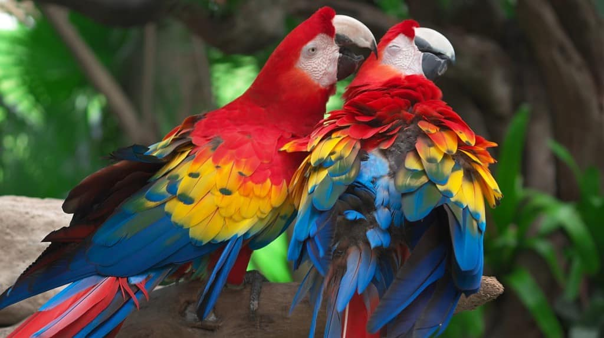

Programmer typing in laptop

About This Image
This picture shows two parrots, Scarlet Macaws (Ara macao). Both of them are very colorful and beautiful. One of them is petting the other, which creates a very cute scene. There are trees and leaves in the background. The parrots have red, white, yellow, and blue colors.
Why JPG Format?
JPG format works well for this image because it likely contains a wide range of colors and smooth transitions between them, such as gradients in lighting or shading. JPG compression is designed for complex, continuous-tone images, so it can reduce file size significantly while maintaining a visually pleasing result.
Image source: a-z-animals.com ↗